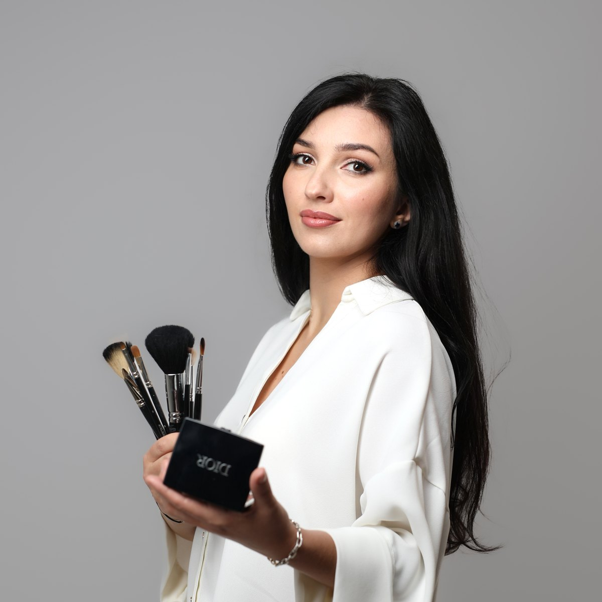

Ličenje brez starosti
Ageless Makeup
Макияж без возраста
Nauči se dnevnega ličenja z lifting učinkom — v petih preprostih korakih. Tudi če se ličiš redko ali ne veš, kje začeti.
Learn everyday makeup with a lifting effect — in five simple steps. Even if you rarely wear makeup or don't know where to start.
Научись дневному макияжу с лифтинг-эффектом — в пять простых шагов. Даже если красишься редко или не знаешь, с чего начать.
Takoj po plačilu prejmeš potrditev na e-mail.
You will receive a confirmation email right after payment.
Сразу после оплаты придёт подтверждение на e-mail.
Prepoznaš se?
Do you recognise yourself?
Узнаёшь себя?
Pet lekcij, ki odpravijo prav to.
Five lessons that fix exactly this.
Пять уроков, которые решают именно это.
Ličiš se tako kot nekoč, vendar rezultat ni več takšen, kot si želiš.
You do your makeup the way you always have, but the result is no longer what you want.
Красишься как раньше, но результат уже не тот, который хочется.
Kozmetike imaš veliko, vendar ne veš več, kaj pravilno uporabiti.
You have lots of makeup but no longer know what to use properly.
Косметики много, но непонятно, что и как использовать.
Ne veš več, kaj nanesti najprej, kam in koliko.
You no longer know what to apply first, where and how much.
Непонятно, что наносить первым, куда и сколько.
Želiš svež in urejen videz, brez občutka težkega ličenja.
You want a fresh, neat look without heavy makeup.
Хочется свежий ухоженный вид без ощущения тяжёлого макияжа.
Kaj je lifting shema in zakaj deluje
What the lifting scheme is and why it works
Что такое лифтинг-схема и почему она работает
Ne gre za novo kozmetiko — pomembna sta vrstni red in mesto nanosa. Nanašanje na enem mestu lahko obraz optično povesi, na drugem pa ga privzdigne. Lifting učinek dosežemo z natančno razporeditvijo izdelkov, ki jih že imaš.
It's not about new products — what matters is the order and the placement. Applying product in one spot can visually drag the face down, in another it lifts it. The lifting effect comes from the exact placement of products you already own.
Дело не в новой косметике — важны . Нанесение в одном месте визуально опускает лицо, в другом — поднимает. Лифтинг достигается точным распределением средств, которые у тебя уже есть.
Shema namesto kaosa: pet korakov v jasnem zaporedju — koža, podlaga, oblikovanje obraza, oči in ustnice.
A scheme instead of chaos: five steps in a clear order — skin, base, face shaping, eyes and lips.
пять шагов в чётком порядке — кожа, тон, моделирование лица, глаза и губы.
3 koraki do samozavestnega ličenja
3 steps to confident makeup
3 шага к уверенному макияжу
Od zmedenosti pred ogledalom do jasne sheme, ki jo ponoviš sama.
From confusion in front of the mirror to a clear scheme you can repeat on your own.
От растерянности перед зеркалом до понятной схемы, которую повторяешь сама.
Razumeš logiko
You understand the logic
Понимаешь логику
Najprej razumeš, kaj se dogaja s kožo in zakaj stara shema ličenja ne daje več enakega rezultata.
First you understand what is happening with your skin and why the old makeup routine no longer gives the same result.
Сначала понимаешь, что происходит с кожей и почему старая схема макияжа больше не даёт прежнего результата.
Dobiš jasno shemo
You get a clear scheme
Получаешь понятную схему
Dobiš shemo v petih korakih: kaj, kam in zakaj nanesti — brez ugibanja.
You get a five-step scheme: what, where and why to apply — without guessing.
Получаешь схему в пять шагов: что, куда и зачем наносить — без догадок.
Ponoviš sama
You repeat it on your own
Повторяешь сама
Vsak korak ponoviš že med ogledom. Na koncu ličenje ponoviš sama, brez videa in v svojem tempu.
You repeat each step while watching. In the end you do your makeup on your own — without the video and at your own pace.
Повторяешь каждый шаг уже во время просмотра. В итоге делаешь макияж сама, без видео и в своём темпе.
Program tečaja
Course program
Программа курса
Pet lekcij + bonusa. Vsako lekcijo ponoviš kar med ogledom.
Five lessons + bonuses. You repeat each lesson right while watching.
Пять уроков + бонусы. Каждый урок повторяешь прямо во время просмотра.
Koža in priprava na ličenje
- Kako določiti tip in stanje kože.
- Pravilna priprava kože na ličenje.
- Izbira in nanos ustrezne podlage.
Skin and preparation for makeup
- How to determine your skin type and condition.
- Proper skin preparation for makeup.
- Choosing and applying the right base.
Podlaga in korekcija tena
- Kako izenačiti ten brez nepotrebnega nanašanja dodatnih slojev.
- Korektor: kam, koliko in zakaj ga nanesti.
- Doseganje naravnega in enakomernega videza kože.
Base and tone correction
- How to even out the tone without unnecessary extra layers.
- Concealer: where, how much and why to apply it.
- Achieving a natural, even skin look.
Obrvi in lifting učinek pri modeliranju obraza
- Izbira oblike obrvi glede na poteze obraza.
- Preprosta shema modeliranja obraza.
- Kam in katere izdelke nanesti za optični lifting učinek.
Brows and lifting effect in face contouring
- Choosing a brow shape to suit your facial features.
- A simple face contouring scheme.
- Where and which products to apply for a visual lifting effect.
Dnevno ličenje oči
- Izbira odtenkov glede na barvo oči.
- Shema treh con z uporabo 2–3 odtenkov.
- Tehnika pravilnega zabrisovanja senčil.
Everyday eye makeup
- Choosing shades for your eye colour.
- A three-zone scheme using 2–3 shades.
- The technique of blending eyeshadow correctly.
Ustnice in zaključek videza
- Izbira ustreznega odtenka.
- Uporaba svinčnika, šminke in bleščila za ustnice.
- Končna uskladitev vseh elementov ličenja za harmoničen videz.
Lips and finishing the look
- Choosing the right shade.
- Using lip pencil, lipstick and gloss.
- Final harmonisation of all makeup elements.
🎁
BONUSA
- Kako dnevno ličenje spremeniti v večerni videz.
- Vodič po kozmetičnih izdelkih, uporabljenih na tečaju – od cenovno dostopnih do luksuznih izdelkov.
BONUSES
- How to turn everyday makeup into an evening look.
- A guide to the cosmetic products used in the course — from affordable to luxury.
Kaj se bo spremenilo po tečaju
What will change after the course
Что изменится после курса
Tudi če se ličiš redko, boš vedela, kje začeti in kaj narediti prvo.
Even if you rarely wear makeup, you will know where to start and what to do first.
Даже если красишься редко, будешь знать, с чего начать и что делать первым.
Ne boš več kupovala naključne kozmetike — vedela boš, kaj potrebuješ in zakaj.
You will stop buying random products — you will know what you need and why.
Перестанешь покупать косметику наугад — будешь знать, что нужно и зачем.
Ličenje ti bo vzelo manj časa, rezultat pa bo svež in naraven.
Your makeup will take less time, and the result will look fresh and natural.
Макияж будет занимать меньше времени, а результат — свежий и естественный.
Znala boš poudariti svoje poteze — brez učinka maske in težkega ličenja.
You will know how to highlight your features — without a mask effect or heavy makeup.
Научишься подчёркивать свои черты — без эффекта маски и тяжёлого макияжа.

O avtorici
About the author
Об авторе
Daria Solopova — profesionalna vizažistka in brow mojstrica, zmagovalka tekmovanja Makeup Mastery Slovenia.
Daria Solopova — professional makeup artist and brow specialist, winner of Makeup Mastery Slovenia.
— профессиональный визажист и brow-мастер, победитель конкурса Makeup Mastery Slovenia.
Pri svojem delu uporabljam sodobne tehnike ličenja in vizualne korekcije obraza. Ne učim samo »kako«, ampak tudi »kaj, kam in zakaj« nanesti — da lahko vsaka ženska ličenje razume in ga samostojno ponovi, brez izkušenj in brez velike količine kozmetike.
In my work I use modern makeup techniques and visual face correction. I don't only teach "how", but also "what, where and why" to apply — so every woman can understand makeup and repeat it on her own, with no experience and no large amount of products.
В работе использую современные техники макияжа и визуальную коррекцию лица. Учу не только «как», но и «что, куда и зачем» наносить — чтобы каждая женщина поняла макияж и повторила его сама, без опыта и без горы косметики.
Varno plačilo s kartico prek Stripe. Če ti plačilo ne uspe, piši na WhatsApp — uredimo ročno.
Secure card payment via Stripe. If your payment does not go through, message me on WhatsApp — we will arrange it manually.
Безопасная оплата картой через Stripe. Если оплата не прошла, напиши в WhatsApp — оформим вручную.
S plačilom se strinjaš s Splošnimi pogoji poslovanja. Podatke obdelujemo skladno s Politiko zasebnosti.
By paying, you agree to the General Terms and Conditions. Your data is processed in accordance with the Privacy Policy.
Оплачивая, ты соглашаешься с Общими условиями. Данные обрабатываются согласно Политике конфиденциальности.
Pogosta vprašanja
Frequently asked questions
Частые вопросы
Ali je tečaj primeren zame, če se redko ličim?
Is this course right for me if I rarely wear makeup?
Подойдёт ли мне курс, если я редко крашусь?
Da. Tečaj je narejen za vsakdanje ženske, ne za profesionalne vizažistke. Začnemo pri osnovah in ti korak za korakom pokažem, kaj, kam in v kakšnem vrstnem redu nanesti.
Yes. The course is made for everyday women, not professional makeup artists. We start with the basics and I show you step by step what to apply, where and in what order.
Да. Курс создан для обычных женщин, а не для профессиональных визажистов. Мы начинаем с основ, и я шаг за шагом показываю, что, куда и в каком порядке наносить.
Kaj pa, če se ne znam ličiti in ne poznam čopičev?
What if I don't know how to do makeup or use brushes?
А если я не умею краситься и не знаю кистей?
Nič ne rabiš znati vnaprej. Vse je razloženo preprosto, brez zapletenih izrazov. Vsak korak ponoviš za mano v svojem tempu.
You don't need to know anything in advance. Everything is explained simply, without complicated terms. You repeat each step after me at your own pace.
Заранее ничего знать не нужно. Всё объясняется просто, без сложных терминов. Каждый шаг повторяешь за мной в своём темпе.
Ali potrebujem veliko ali drago kozmetiko?
Do I need a lot of makeup or expensive products?
Нужно ли много косметики или дорогие средства?
Ne. Uporabiš kozmetiko, ki jo že imaš. V bonusu je vodič po izdelkih — od cenovno dostopnih do luksuznih — da veš, kaj se splača kupiti.
No. You use the makeup you already own. The bonus includes a product guide — from affordable to luxury — so you know what is worth buying.
Нет. Используешь косметику, которая у тебя уже есть. В бонусе есть гид по средствам — от доступных до люксовых, — чтобы понимать, что стоит покупать.
Ali je tečaj primeren za moj tip kože in moja leta?
Is the course suitable for my skin type and age?
Подойдёт ли курс для моего типа кожи и возраста?
Da. Naučiš se določiti tip in stanje kože ter ličenje prilagoditi sebi — tudi zrelejši, suhi ali mastni koži.
Yes. You will learn to determine your skin type and condition and adapt your makeup to yourself — including mature, dry or oily skin.
Да. Ты научишься определять тип и состояние кожи и адаптировать макияж под себя — в том числе для зрелой, сухой или жирной кожи.
Kako poteka tečaj in koliko časa potrebujem?
How does the course work and how much time do I need?
Как проходит курс и сколько времени нужно?
Tečaj sestavlja 5 video lekcij + 2 bonusa. Vsako lekcijo gledaš, ko ti ustreza, in jo ponoviš tolikokrat, kot potrebuješ. Urnik si določiš sama.
The course consists of 5 video lessons + 2 bonuses. Watch each lesson whenever it suits you and repeat it as many times as you need. You set your own schedule.
Курс состоит из 5 видеоуроков + 2 бонусов. Каждый урок смотришь, когда удобно, и повторяешь столько раз, сколько нужно. График выбираешь сама.
Ali bom znala ličenje ponoviti sama, brez videa?
Will I be able to repeat the makeup on my own, without the video?
Смогу ли я повторить макияж сама, без видео?
Da. Cilj tečaja je jasna shema v petih korakih, ki si jo zapomniš in ponoviš sama — brez gledanja videa.
Yes. The goal of the course is a clear five-step scheme that you remember and can repeat on your own — without watching the video.
Да. Цель курса — понятная схема в пять шагов, которую ты запомнишь и повторишь сама, без просмотра видео.
Kdaj se tečaj začne in kako dolgo imam dostop?
When does the course start and how long do I have access?
Когда начинается курс и насколько долго доступ?
Tečaj se začne 1. 12. 2026. Po plačilu prejmeš potrditev na e-mail, ob začetku pa dostop do vseh lekcij. Dostop je za vedno.
The course starts on 1 December 2026. After payment you receive a confirmation by email, and at the start access to all lessons. Access is for life.
Курс начинается 1.12.2026. После оплаты придёт подтверждение на e-mail, а в день старта — доступ ко всем урокам. Доступ навсегда.
Kaj pa, če mi tečaj ne bo ustrezal?
What if the course isn't right for me?
А если курс мне не подойдёт?
Do začetka tečaja in še 14 dni po prejemu dostopa lahko odstopiš in prejmeš vračilo kupnine. Brez komplikacij.
Until the course starts and for 14 days after receiving access, you can cancel and get a refund. Without complications.
До старта курса и ещё 14 дней после получения доступа можно отменить покупку и получить возврат. Без сложностей.
Zdaj je pravi čas, da se naučiš ličiti zase
Now is the right time to learn makeup for yourself
Сейчас самое время научиться краситься для себя
Predprodaja 12 € · začetek 1. 12. 2026 · 14-dnevna garancija vračila.
Pre-sale €12 · starts 1 Dec 2026 · 14-day money-back guarantee.
Предпродажа 12 € · старт 1.12.2026 · 14-дневная гарантия возврата.
Kupi v predprodaji — 12 € Buy in pre-sale — 12 € Купить в предпродаже — 12 €